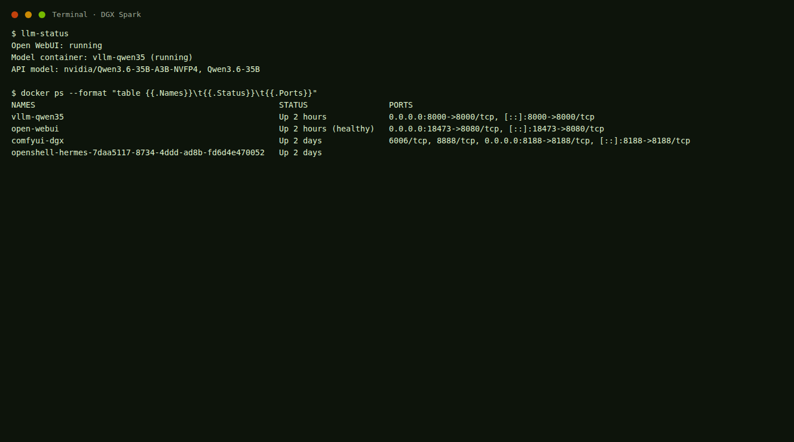
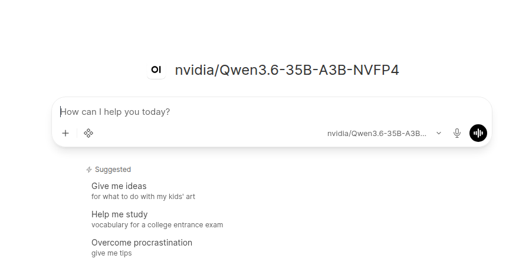
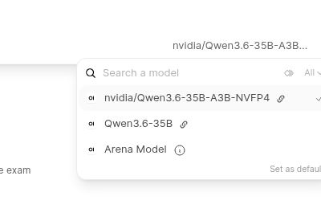
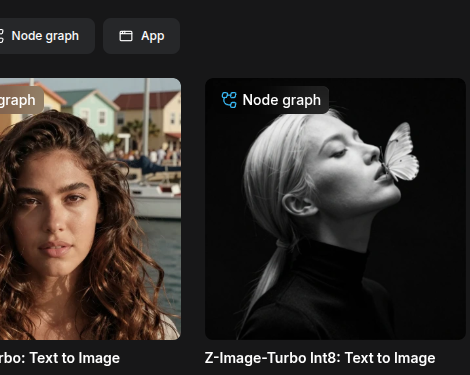
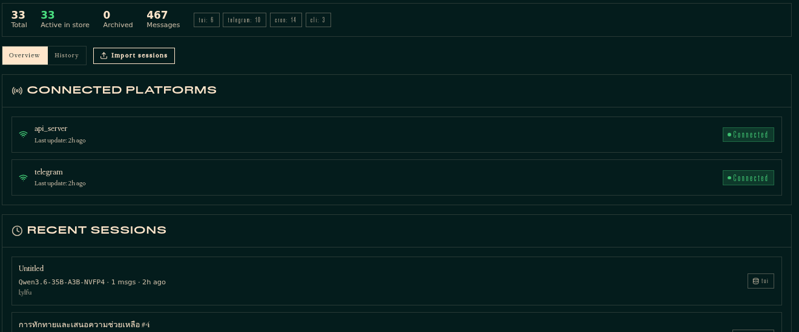
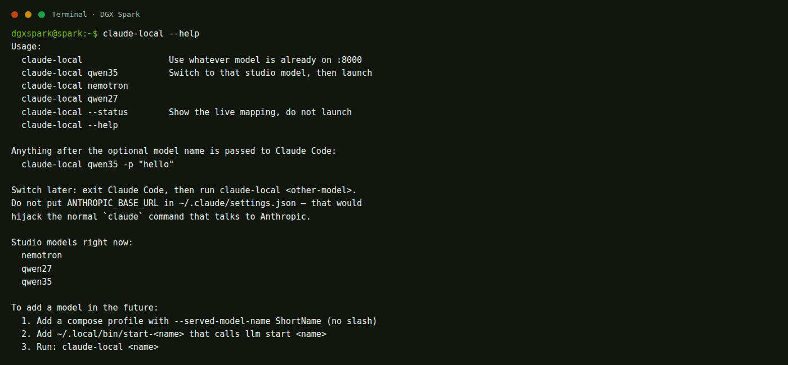
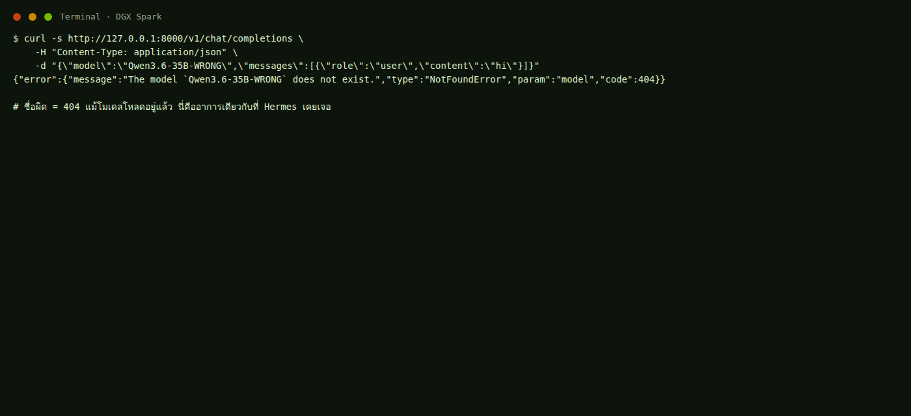

เลือกงานที่ต้องการทำ
เว็บนี้แยกหมวดตามหน้าที่จริง แชท คนละหน้ากับโมเดล คนละหน้ากับสร้างภาพ ภาพทุกใบแคปจากเครื่องนี้ ไม่ใช่ภาพสมมติ
เริ่มต้น
เปิดเทอร์มินัล ตรวจว่าโปรแกรมไหนกำลังทำงาน และดูแผนที่พอร์ตของเครื่องนี้

เข้าหมวดเริ่มต้น → 02 / CHATแชท Open WebUI
ล็อกอิน รู้จักหน้าจอ เลือกโมเดล ส่งข้อความแรก ตั้งค่าแอดมิน และการต่อ API

เข้าหมวดแชท → 03 / MODELSโมเดลภาษา
เปิด ปิด สลับ Nemotron / Qwen 27B / Qwen 35B อธิบายสองคำสั่งที่ชื่อคล้ายกัน ชื่อโมเดลสามชั้น และทำไม RAM สูง

เข้าหมวดโมเดล → 04 / IMAGEสร้างภาพและวิดีโอ
ComfyUI คนละระบบกับแชท สร้างภาพนิ่ง แก้ภาพ แล้วค่อยทำวิดีโอสั้นเมื่อมีโมเดล

เข้าหมวดภาพและวิดีโอ → 05 / AGENTNemoClaw + Hermes
เอเจนต์ใน sandbox แยกจาก Open WebUI เปิดแดชบอร์ด คุยใน Chat และดูสถานะด้วยคำสั่งจริงบนเครื่องนี้

เข้าหมวด Hermes → 06 / CLAUDEClaude Code
ใช้ตัวช่วยเขียนโค้ดในเทอร์มินัลกับโมเดลในเครื่อง สลับ Qwen / Nemotron ได้ และเพิ่มโมเดลใหม่ในอนาคตโดยไม่แก้คอนฟิก Claude

เข้าหมวด Claude Code → 07 / SYSTEMระบบเครื่อง
เปิดปิดทั้งสตูดิโอ อ่าน RAM และรายการสิ่งที่ห้ามทำ
 เข้าหมวดระบบ →
08 / FIX
เข้าหมวดระบบ →
08 / FIX
แก้ปัญหา
หน้าเว็บไม่ขึ้น ไม่มีโมเดล RAM เต็ม หรือ ComfyUI กด Run ไม่ได้

เข้าหมวดแก้ปัญหา → 09 / TERMSศัพท์ Local AI
รวมคำที่ควรรู้ตอนรัน AI ในเครื่อง ทั้งโมเดล แรม ควอนไทซ์ API เอเจนต์ ภาพ วิดีโอ และคำตอนพัง
เข้าหมวดศัพท์ →start- อย่างเดียว อย่าสลับกับ qwen35-start